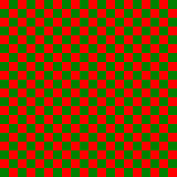

Homework 9: Advanced Decomposition Scenarios
Question Suite 1: Checkerboard Image Merge
Code Writing: Determine Checkerboard Square Type
Task: The checkerboard effect is often generated by dividing an image up into even-sized squares, checking the “position” of the pixel based on the x,y as well as a “square”size parameter to determine a class of square. The alternation of these class of squares generates the checkerboard effect (i.e. type 0, type 1, type 0, type 1…). The square_side_length parameter conceptually divides an image into a grid of squares. For any pixel at coordinates (px, py), we can determine which square in this grid it belongs to. The "grid column" can be found by grid_col = px // square_side_length, and the "grid row" by grid_row = py // square_side_length. Our checkerboard pattern alternates between two types of squares, let's call them "type 0" and "type 1". A common way to achieve an alternating pattern is to sum the grid_row and grid_col. If this sum is even, the square is one type; if the sum is odd, it's the other type. For our purposes, the square containing the image origin (0,0) (which corresponds to grid_row=0, grid_col=0) will be "type 0".
Write a Python function
get_square_type(px: int, py: int, square_side_length: int) ->
int. This function should:
- Calculate the grid_row and grid_col for the pixel (px, py) based on square_side_length.
- Determine if the sum (grid_row + grid_col) is even or odd.
- Return 0 if the sum is even (this is a "type 0" square).
- Return 1 if the sum is odd (this is a "type 1" square).
Assume square_side_length will always be a positive integer (e.g., 1 or greater).
def get_square_type(px: int, py: int, square_side_length: int) -> int:
"""
Determines the type of checkerboard square (0 or 1) for a pixel.
A square at grid (row, col) is type 0 if (row + col) is even, type 1 if odd.
Args:
px: The x-coordinate of the pixel.
py: The y-coordinate of the pixel.
square_side_length: The side length (positive integer) of each checkerboard square.
Returns:
0 or 1, representing the type of the square.
"""
# Your code here:
# Calculate grid_row and grid_col.
# Check if (grid_row + grid_col) is even or odd.
# Return 0 for even sum, 1 for odd sum.
pass # Remove this line
Code Writing: Select Pixel Based on Square Type
Task: In our checkerboard merge effect, after determining the square_type (which will be 0 or 1) for a given pixel location, we need to select the actual pixel color from either the top_image_pixel or the bottom_image_pixel. Let's establish a rule:
- If square_type is 0, we select bottom_image_pixel.
- If square_type is 1, we select top_image_pixel.
Write a Python function
select_pixel_for_overlay(top_pixel_color: tuple[int, int, int],
bottom_pixel_color: tuple[int, int, int], square_type: int) ->
tuple[int, int, int]. This function takes the (R,G,B) color tuple of the pixel from the
top image, the (R,G,B) color tuple of the pixel from the bottom
image, and the square_type (an integer, either 0 or 1). It should
return the chosen (R,G,B) color tuple based on the rule above.
Hint: Don’t overthink this question!
def select_pixel_for_overlay(top_pixel_color: tuple, bottom_pixel_color: tuple, square_type: int) -> tuple:
"""
Selects either the top or bottom pixel color based on the square_type.
Args:
top_pixel_color: (R,G,B) tuple from the top image.
bottom_pixel_color: (R,G,B) tuple from the bottom image.
square_type: An integer (0 or 1) indicating the checkerboard square type. 0 means use bottom_pixel_color, 1 means use top_pixel_color.
Returns:
The selected (R,G,B) color tuple.
"""
# Your code here:
# Implement the selection logic based on square_type.
pass # Remove this line
Testing: Checkerboard Square Type Logic
Question: You are testing the Python function
get_square_type(px: int, py: int, square_side_length: int) ->
int
from an earlier question. This function is designed to determine if
a pixel at (px, py) belongs to a "type 0" or "type 1" square in a
checkerboard pattern. The square_side_length defines the side length
of each square. The logic is: grid_row = py // square_side_length,
grid_col = px // square_side_length. The function returns 0 if
(grid_row + grid_col) is even, and 1 if it's odd. Your goal is to
test it thoroughly using a minimal but diverse set of test cases
from the list provided below.
Test Cases (Input: (px, py, square_side_length), Expected Output):
- TC1: (0, 0, 10) -> 0 (Grid (0,0), sum 0, type 0)
- TC2: (9, 9, 10) -> 0 (Still in grid (0,0), sum 0, type 0)
- TC3: (10, 0, 10) -> 1 (Grid (0,1), sum 1, type 1)
- TC4: (0, 10, 10) -> 1 (Grid (1,0), sum 1, type 1)
- TC5: (10, 10, 10) -> 0 (Grid (1,1), sum 2, type 0)
- TC6: (5, 5, 10) -> 0 (Middle of grid (0,0), sum 0, type 0)
- TC7: (0, 0, 1) -> 0 (Grid (0,0) with size 1, sum 0, type 0)
- TC8: (1, 0, 1) -> 1 (Grid (0,1) with size 1, sum 1, type 1)
- TC9: (25, 15, 5) -> 0 (Grid (3,5), sum 8, type 0)
- TC10: (2, 3, 2) -> 0 (Grid (1,1), sum 2, type 0)
Which of the following sets of test cases provides the best minimal but diverse testing for the get_square_type function, covering different positions relative to square boundaries (within, on edge), different grid arrangements resulting from these positions, and edge cases for square_side_length?
- TC1, TC2, TC6, TC7, TC8
- TC1, TC2, TC3, TC4, TC5
- TC1, TC2, TC3, TC4, TC7, TC9
- TC1, TC2, TC3, TC4, TC5, TC6, TC9, TC10
Closed-Box Debugging: Checkerboard Pattern Appears as Stripes
Scenario: You are using a Python function
apply_checkerboard_merge(img_top, img_bottom, square_size). This function is supposed to merge img_top and img_bottom (both
of the same dimensions) using a checkerboard pattern of a given
square_size. In "type 0" squares (e.g., the one at (0,0)), pixels
from img_bottom should be shown. In "type 1" squares, pixels from
img_top should be shown. The type is determined by the sum of
grid_row and grid_col indices being even (type 0) or odd (type 1).
Observed Problem: You call the function with
square_size = 20. Instead of seeing a 20x20
checkerboard pattern in the output result image, you observe that
the result image is composed of vertical stripes. There are 20-pixel
wide vertical stripes(i.e. Portions of the image from the top of the
resultant image to the bottom) taken entirely from img_bottom,
alternating with 20-pixel wide vertical stripes taken entirely from
img_top. The pattern does not change vertically; a column of pixels
always belongs to the same source image strip.
Question: You do not have access to the function's source code. What is the most likely logical error in how the function determines which image to pick pixels from?
-
The function is always choosing
img_topregardless of the pixel's position. - The function is calculating grid_row = py // square_size and grid_col = px // square_size, but then only uses the parity of grid_row (i.e., grid_row % 2) to decide between img_top and img_bottom.
- The function is calculating grid_row = py // square_size and grid_col = px // square_size, but then only uses the parity of grid_col (i.e., grid_col % 2) to decide between img_top and img_bottom.
-
The
square_sizeparameter is being ignored, and a default size of 1 is being used for the pattern, but there's also an issue with y-coordinate processing.
Decomposing Checkerboard Image Merge
Task Context: You are to design a main Python
function
apply_checkerboard_merge(img_top: Image.Image, img_bottom:
Image.Image, square_size: int) -> Image.Image. This function will merge two input images, img_top and img_bottom
(assumed to be of the same width and height), into a result image.
The merging uses a checkerboard pattern where the side length of
each square is square_size. The logic for choosing is: for a pixel
at (px,py), first determine its grid_row = py // square_size and
grid_col = px // square_size. If (grid_row + grid_col) is even
(let's call this "type 0"), the corresponding pixel in result comes
from img_bottom. If the sum is odd ("type 1"), the pixel comes from
img_top.
An example of the checkerboard pattern would look like this, suppose we had a solid red image and a solid green image each being having dimensions of 400x400 pixels. With our img_top being the solid green, and the img_bottom being the solid red. The resultant checkerboard pattern would look something like:
Question: Recalling the principles of Problem Decomposition from Chapter 7, and keeping in mind that helper functions should encapsulate distinct, non-trivial pieces of logic (i.e., generally avoiding helpers that are just one-line wrappers for existing library calls), select ALL helper functions that would be most logical and effective for implementing create_checkerboard_merge.
-
initialize_output_canvas(width: int, height: int, color_mode: str) -> Image.Image: A general utility to create and return a new, blank PIL Image object with specified dimensions and color mode. This is effectively a direct call to Image.new(). -
get_square_type(px: int, py: int, square_side_length: int) -> int: (Function from QID: get_checkerboard_square_type_coding) Description: Calculates and returns an integer (0 or 1) indicating the checkerboard square type based on the pixel's coordinates and the square side length, using the (row+col) parity logic. -
get_pixel_rgb_color(source_image: Image.Image, x_coord: int, y_coord: int) -> tuple[int, int, int]: Retrieves the (R,G,B) color tuple of the pixel at specified coordinates from a source image. This is effectively a direct call to source_image.getpixel(). -
select_pixel_for_overlay(top_pixel_color: tuple[int, int, int], bottom_pixel_color: tuple[int, int, int], square_type: int) -> tuple[int, int, int]: (Function from QID: select_pixel_for_checkerboard_coding) Description: Given pixel colors from two source images and a square type (0 or 1), applies the rule to select and return the appropriate color for the final image. -
get_grid_indices_only(px: int, py: int, side_len: int) -> tuple[int, int]: A partial helper that only calculates and returns the (grid_row, grid_col) tuple for a pixel, but does not proceed to determine the actual square type (0 or 1) based on these indices. -
is_top_leftmost_pixel_black_for_checkerboard(square_dim: int) -> bool: A highly specific one-liner style function, return get_square_type(0,0,square_dim) == 0, that only checks the type of the very first pixel of the checkerboard. -
merge_images_identically(image1: Image.Image, image2: Image.Image) -> Image.Image: A function that attempts to combine two images by averaging every corresponding pixel pair.
Question Suite 2: Driving Simulator Decomposition
Building and Decomposing a Car Simulator
Scenario: You're building a turn-based car simulator. While using the simulator, players have the choice of accelerating (speeding up), braking, and turning. Some properties about the car itself: the car has speed (float), fuel (float), and direction (N, S, E, W). While in the simulator, the car drives within some pre-specified road boundaries towards a destination, as if you were driving using a GPS with a predefined destination. The simulator ends if fuel runs out, the car crashes (hits a boundary), or reaches the destination.
Some things to note:
- Fuel goes down at some pre-specified rate when the game starts (this is predefined)
- While the goal of the simulator is to drive within the road boundaries, if a user chooses to move in a direction that leads them to a boundary (i.e. causing a collision), this constitutes a crash.
- Like any simulation, the simulator is responsible for displaying current information about the simulator, (i.e. the speed, fuel levels, direction, and more).
Question: Recalling the principles of Problem Decomposition from Chapter 7, and keeping in mind that helper functions should encapsulate distinct, non-trivial pieces of logic (i.e., generally avoiding helpers that are just one-line wrappers for existing library calls). Which diagram best shows a top-down decomposition for this simulator?
Option A:
run_simulation
├── initialize_simulation_state (car, environment, fuel, destination)
├── main_game_thread
│ ├── get_all_inputs
│ ├── update_all_physics
│ └── draw_everything_to_screen
└── display_game_over_reasonOption B:
operate_car_simulation
├── setup_simulation_parameters
│ ├── create_car_with_attributes
│ ├── define_road_layout_and_destination
│ └── set_initial_game_flags
├── simulation_engine_loop
│ ├── display_car_speed
│ ├── display_car_fuel
│ ├── display_car_direction
│ ├── get_player_action_from_keyboard
│ ├── apply_acceleration_rules
│ ├── apply_braking_rules
│ ├── apply_turning_rules
│ ├── calculate_fuel_decrease
│ ├── move_car_on_map
│ ├── check_if_fuel_is_zero
│ ├── check_if_car_hit_boundary
│ └── check_if_car_at_destination
└── show_simulation_result_messageOption C (Correct):
-
run_simulation-
initialize_simulationcreate_car_state(...)setup_environment(...)
-
simulation_loopdisplay_dashboard(...)get_player_command(...)-
execute_player_commandhandle_acceleration(...)handle_braking(...)handle_turning(...)
update_car_state(...)-
check_simulation_end_conditionscheck_fuel_statuscheck_boundary_violationscheck_destination_reached
display_simulation_outcome(...)
-
Option D:
car_game_main
├── init_game
├── game_cycle
│ ├── handle_input
│ ├── process_logic
│ │ └── update_car
│ │ └── move_car
│ │ └── consume_fuel
│ │ └── check_collisions
│ │ └── check_win_lose
│ └── render_status
└── end_gameOption E:
run_simulation_scenario
├── configure_initial_settings
│ ├── generate_car_properties
│ └── establish_world_rules (boundaries, target)
├── interactive_simulation_loop
│ ├── present_car_status_to_player // Displays dashboard
│ ├── solicit_player_driving_action // Gets command string
│ ├── interpret_and_apply_player_action // Handles accel, brake, turn
│ │ ├── process_acceleration_request
│ │ ├── process_braking_request
│ │ └── process_turning_request
│ └── evaluate_game_ending_criteria // Checks fuel, boundary, destination
│ ├── verify_sufficient_fuel
│ ├── check_for_boundary_breach
│ └── confirm_arrival_at_destination
└── announce_simulation_conclusionOption F:
start_driving_experience
├── initialize_driving_session_data
│ ├── create_vehicle_state_representation
│ └── define_operational_area_and_goal
├── turn_based_game_flow
│ ├── display_vehicle_info_and_get_player_choice // Combines output and input
│ ├── resolve_player_choice_and_world_consequences
│ │ ├── adjust_vehicle_physics_and_fuel // Modifies speed, direction, and fuel together
│ │ └── update_vehicle_location_and_check_all_events
│ └── determine_and_show_final_status_if_ended // Checks if game should end and if so, displays outcomeFunction Design: Updating Car State
Function Description: Recalling the decomposition options from the previous question: “ Building and Decomposing a Car Simulator”, we are building this helper function `update_car_state`. This function updates the car's position and fuel. It uses the car's current speed, direction, position, fuel, and a given time step. It should return the car's new state.
Question: Which Python function prototype and docstring best defines update_car_state?
-
def update_car_state(current_car_state: dict, time_step: float) -> dict:
""" Updates car's position and fuel based on speed, direction, and time_step. Args: current_car_state: Dict with 'speed', 'direction', 'position', 'fuel'. time_step: Simulation step duration (e.g., seconds). Returns: New dict with car's updated state (position, fuel). """ -
def update_car_state(speed: float, direction: str, x_pos: float, y_pos: float, fuel: float, dt: float) -> tuple[float, float, float]:
""" Calculates new x_pos, y_pos, and fuel based on inputs. Args: speed: Current car speed. direction: Current car direction (e.g., "N", "E"). x_pos: Current x-coordinate. y_pos: Current y-coordinate. fuel: Current fuel level. dt: Time step for the update. Returns: A tuple (new_x_pos, new_y_pos, new_fuel_level). """ -
def update_car_state(car: object, time: float) -> car:
""" Updates the car. Args: car: The car object. time: Simulation time step. Returns: The modified car object. """ -
def update_car_state(car_info: list, elapsed_time: float) -> list:
""" Updates car_info (composed of [speed, dir_angle, x, y, fuel]) and only updates the car’s x, y position and fuel level. Args: car_info: List of car's state. elapsed_time: Time step. Returns: The modified car_info list. """ -
def update_car_state(car_dict: dict, time_val: float) -> None:
""" Processes car_dict, updating position and fuel_level based on speed, direction (all in car_dict), and time_val. Modifies car_dict in place. Args: car_dict: Dictionary with all car data. time_val: Time passed for this update. Returns: Nothing (dictionary is changed directly). """ -
def update_car_state(car_state_tuple: tuple, time_slice: float) -> tuple:
""" Updates car state (position, fuel). Args: car_state_tuple: (speed, direction, (x,y), fuel). time_slice: The time step. Returns: New tuple with updated ((x,y), fuel). Other elements may be omitted. """
Function Design: Checking Fuel Status
Function Description: Recalling the decomposition options from the previous question: “ Building and Decomposing a Car Simulator”, we are building this helper function, we are attempting to build the `check_fuel_status` function. This helper function checks if the car is out of fuel. It takes the car's current fuel level and should properly indicate whether or not the car is out of fuel. NOTE: This is part of a larger check_simulation_end_conditions function.
Question: Which Python function prototype and docstring best defines check_fuel_status?
-
def check_fuel_status(car_object) -> str:
""" Checks car_object's fuel attribute. Args: car_object: The car object. Returns: "OUT_OF_FUEL" if fuel <= 0, "OK" otherwise. """ -
def check_fuel_status(current_fuel_level: float) -> bool:
""" Determines if the car is out of fuel. Args: current_fuel_level: Car's current fuel (non-negative float). Returns: True if current_fuel_level <= 0 (out of fuel). False if current_fuel_level > 0. """ -
def check_fuel_status(fuel: float, car_state: dict) -> bool:
""" Checks fuel. Updates car_state if out of fuel. Args: fuel: Current fuel. car_state: Car's state dictionary. Returns: True if out of fuel. """ -
def check_fuel_status(all_game_data: dict) -> bool:
""" Accesses fuel level from a nested structure within all_game_data (e.g., all_game_data['car']['fuel']). Args: all_game_data: A dictionary containing all game state. Returns: Boolean: True if car's fuel is depleted, False otherwise. """ -
def check_fuel_status(fuel_amount: float) -> int:
""" Checks fuel. Args: fuel_amount: Current fuel. Returns: 1 if out of fuel, 0 if fuel is available. """ -
def check_fuel_status(car_stats: list[float]) -> bool:
""" Checks fuel level (second element in car_stats). Args: car_stats: List where car_stats[1] is fuel. Returns: True if fuel (car_stats[1]) <= 0, else False. """
Question Suite 3: Daily Schedule Planner
Decomposition: Structuring the Daily Schedule Planner
Scenario: You're building a daily schedule planner program. Expected capabilities of the program are that users can:
- Add tasks (description, start time "HH:MM", duration in minutes).
- View tasks (sorted by time).
- Remove tasks.
- The system must prevent adding tasks that overlap in time. The schedule holds all of these tasks in a dictionary where the format is a list where each item is a dictionary holding a task's details.
Question: Recalling the principles of Problem Decomposition from Chapter 7, which diagram best shows a top-down decomposition(you can refer to Chapter 7 to remember what a top-down decomposition is)? Aim for manageable functions with distinct responsibilities, avoiding overly broad or trivial helper functions.
Option A:
scheduler_application_start
├── create_empty_schedule
├── main_interactive_session
│ └── process_all_user_actions_and_schedule_logic (a single, large function to handle everything: add, view, remove, conflict check, user input, screen output)
└── display_application_closed_messageOption B:
run_daily_schedule_planner
├── prepare_internal_schedule_storage
├── core_scheduler_user_interaction_loop
│ ├── show_available_actions_on_screen
│ ├── get_user_text_command_choice
│ ├── if_user_chooses_add_new_task:
│ │ ├── ask_for_task_description_text
│ │ ├── ask_for_task_start_time_text
│ │ ├── ask_for_task_duration_text
│ │ ├── perform_all_input_validations_in_this_block
│ │ ├── perform_all_time_conversions_in_this_block
│ │ ├── perform_entire_conflict_check_logic_in_this_block
│ │ └── add_new_task_data_to_internal_schedule_if_all_ok
│ ├── if_user_chooses_view_all_tasks:
│ │ └── iterate_through_schedule_and_print_all_details
│ └── if_user_chooses_remove_a_task:
│ └── ask_for_task_to_remove_and_delete_from_internal_scheduleOption C:
schedule_management_utility_run
├── obtain_user_instruction_as_one_line_text // e.g., "ADD New Event,14:30,45" or "VIEW SCHEDULE"
├── primary_command_interpreter_and_executor_function // A single, complex function that parses the instruction text and then performs all associated logic for every possible instruction (validation, conflict detection, schedule list changes, screen output).
└── show_final_status_or_error_on_screenOption D (Correct):
run_schedule_planner
├── initialize_schedule // Creates an empty list for task data
├── scheduler_main_loop
│ ├── display_main_menu // Shows user options like "add", "view", "exit"
│ ├── get_menu_selection // Gets the user's string choice
│ ├── handle_menu_selection // Directs to other functions based on choice
│ │ ├── execute_add_new_task_workflow
│ │ │ ├── get_task_details_from_user // Prompts for description, start time, duration as strings
│ │ │ ├── validate_and_parse_task_inputs // Checks string formats, converts time to a usable numeric form (e.g., minutes from midnight)
│ │ │ ├── check_for_time_conflict // Compares new task's numeric times with existing tasks in the schedule
│ │ │ └── add_task_record_to_schedule // Appends task data (e.g., a dictionary) to the schedule list if all checks pass
│ │ ├── execute_display_schedule_workflow
│ │ │ └── format_task_for_display // Helper function to create a consistently formatted, readable string for each task
│ │ ├── execute_remove_task_workflow
│ │ │ ├── get_task_identifier_for_deletion // Asks user how to identify the task to remove
│ │ │ └── find_and_delete_task // Searches the schedule list and removes the specified task data
│ │ └── handle_exit_option
└── (Program ends when user exits loop)Option E:
initiate_schedule_program
├── setup_empty_schedule_list
├── main_user_command_cycle
│ ├── present_command_choices_to_user
│ ├── get_user_menu_action_choice
│ ├── if_action_is_add_task:
│ │ ├── obtain_raw_task_input_strings_from_user // Gets description, start_str, duration_str
│ │ ├── convert_strings_and_validate_data_types // Parses time/duration to numbers, basic validation
│ │ └── append_new_task_to_schedule_list // Adds task record (e.g., dictionary) to list
│ ├── if_action_is_view_schedule:
│ │ └── prepare_and_display_all_tasks
│ └── if_action_is_remove_task:
│ └── request_identifier_and_remove_task_from_list
└── terminate_program_execution_cleanlyOption F:
start_scheduler_interaction_flow
├── create_new_empty_task_collection
├── primary_application_loop_handler
│ ├── display_interactive_user_menu
│ ├── accept_user_menu_option
│ ├── route_user_option_to_handler
│ │ ├── process_new_task_entry_and_initial_checks // Gets all task input strings AND performs basic format validation
│ │ ├── analyze_schedule_availability_and_store_task // Converts times for new task, checks ALL conflicts, AND adds to schedule if clear
│ │ ├── compile_and_output_schedule_report_or_get_removal_target // Formats entire schedule for viewing OR prompts user for which task to remove based on mode
│ │ └── execute_task_deletion_from_collection // Performs the actual removal
└── display_program_exit_messageFunction Design: Parsing and Validating Task Start Time
Function Description: Recalling the Decomposition
Problem from the previous question, let’s propose a helper function
that could be used in some of the options above:,
parse_and_validate_start_time, which would be found in
the "add task" workflow. It receives a single string,
time_str, which is the user's input for the task's
start time (expected format "HH:MM", e.g., "09:45"). Its tasks are:
-
Verify
time_strmatches the "HH:MM" pattern (e.g., correct length, colon in the middle, digits for HH and MM). - If the pattern is correct, extract HH and MM as integers.
- Ensure HH is between 00 and 23 (inclusive) and MM is between 00 and 59 (inclusive).
- If all checks pass, it should return the time converted to total minutes from midnight (integer). For example, "01:00" becomes 60. If any check fails (invalid format or invalid hour/minute values), it must indicate this failure, and return None.
Question: Which Python function prototype and docstring best defines parse_and_validate_start_time?
-
def parse_and_validate_start_time(time_str: str) -> int | None:
""" Checks if "HH:MM" format is valid. If so, returns number of characters parsed. Args: time_str: The start time string. Returns: Length of time_str (an int, e.g., 5) if format appears like "HH:MM". Returns None if format is grossly incorrect (e.g., wrong length). """ -
def parse_and_validate_start_time(time_str: str) -> int:
""" Parses "HH:MM" to minutes. Assumes input is always perfectly valid. Args: time_str: A guaranteed valid "HH:MM" string. Returns: Total minutes from midnight. (No error checking described). """ -
def parse_and_validate_start_time(time_str: str) -> tuple[bool, int, str]:
""" Validates and parses "HH:MM" time string. Args: time_str: The start time string. Returns: A tuple: (isValid: bool, minutes: int, status_message: str). 'minutes' is 0 if invalid. 'status_message' explains error or "OK". """ -
def parse_and_validate_start_time(hours: int, minutes: int) -> int | None:
""" Validates pre-parsed integer hours (0-23) and minutes (0-59). Converts to total minutes from midnight if valid. Args: hours: Integer hour. minutes: Integer minute. Returns: Total minutes from midnight (int) or None if hour/minute out of range. """ -
def parse_and_validate_start_time(time_str: str) -> bool | int:
""" If time_str ("HH:MM") is valid, returns total minutes (int). If invalid, returns False. Args: time_str: The start time string. Returns: Total minutes from midnight (int) upon successful validation and parsing, or False if any validation (format, hour range, minute range) fails. """ -
def parse_and_validate_start_time(time_components: list[str]) -> int:
""" Takes a list of strings, e.g., ["HH", "MM"]. Validates and converts. Prints error to console and returns -1 if invalid. Args: time_components: List containing hour string and minute string. Returns: Total minutes from midnight, or -1 on error. """ -
def parse_and_validate_start_time(time_str: str) -> int | None:
""" Parses an "HH:MM" time string to total minutes from midnight if valid. Checks "HH:MM" format, hour (0-23), and minute (0-59) validity. Args: time_str: The start time string from user input (e.g., "09:45"). Returns: Total minutes from midnight (int) if time_str is valid and represents a real time. Returns None if format or time values are invalid. """ -
def parse_and_validate_start_time(time_str: str) -> None:
""" Parses "HH:MM" time string. Checks format. Validates hour (0-23) and minute (0-59). Args: time_str: The start time string (e.g., "09:45"). Returns: Always returns None after printing validation status and parsed minutes if valid. (Intended for direct console output, not returning parsed value for use). """ -
def parse_and_validate_start_time(time_str: str) -> int | None:
""" Validates "HH:MM" format, hour (0-23), and minute (0-59). Args: time_str: The start time string (e.g., "09:45"). Returns: Returns 0 (as an int) if time_str is valid. Returns None if format or time values are invalid. (Does not return the actual minutes from midnight). """
Function Design: Finding and Deleting a Task
Function Description: From the Schedule Planner's
"remove task" workflow, the
find_and_delete_task function is responsible for
removing a specific task from the
current_schedule (which is a list of task records,
e.g., dictionaries). This function needs:
- The
current_schedulelist. -
An identifier for the task to be deleted. For simplicity, assume
this identifier is the exact description string of the task to
remove. The function should search the
current_schedulefor the first task record whose 'description' matches the identifier. -
If found, the task record should be removed from the
current_schedulelist (the list is modified in-place). The function should then indicate success. -
If no task with that description is found, the list remains
unchanged, and the function should indicate failure by returning
False.
Question: Which Python function prototype and docstring best defines find_and_delete_task?
-
def find_and_delete_task(schedule: list[dict], description_key: str, value_to_match: str) -> tuple[list[dict], bool]:
""" General purpose find and delete. Removes all tasks where task[description_key] == value_to_match. Args: schedule: List of task dicts. description_key: The key to check in each dict (e.g., 'description'). value_to_match: The value to match for deletion. Returns: A tuple: (modified_schedule_list, was_any_task_removed_bool). The returned list is always a new list. """ -
def find_and_delete_task(schedule: list, description: str) -> list:
""" Removes task by description. Args: schedule: The list of tasks. description: Task description to find. Returns: A new list with the task removed. Original list is NOT modified. If task not found, returns a copy of the original list. """ -
def find_and_delete_task(schedule: list[dict], task_id: int) -> dict | None:
""" Removes task by its integer index (task_id) from the schedule. Args: schedule: List of task dictionaries. task_id: The numerical index of the task to remove. Returns: The removed task dictionary if successful (and index was valid), None if index was out of bounds or task not found. """ -
def find_and_delete_task(schedule: list, task_to_remove: dict) -> bool:
""" Removes the exact task_to_remove dictionary object from the schedule. Assumes task_to_remove is one of the dictionary objects present in the schedule. Args: schedule: The list of tasks. task_to_remove: The actual dictionary object to remove. Returns: True if removal was successful (object found), False if object not in list. """ -
def find_and_delete_task(current_schedule: list, identifier: str) -> None:
""" Searches for task by identifier (description) and removes it. Prints status ("Removed" or "Not found") to console. Args: current_schedule: The schedule list (modified in-place). identifier: The task description. Returns: None. """ -
def find_and_delete_task(current_schedule: list[dict], task_description_to_remove: str) -> bool:
""" Finds and removes the first task matching task_description_to_remove from current_schedule. Modifies current_schedule in-place. Args: current_schedule: List of task dictionaries. Each dict is expected to have a 'description' key. task_description_to_remove: The description of the task to delete. Returns: True if a task was found and removed, False otherwise. """